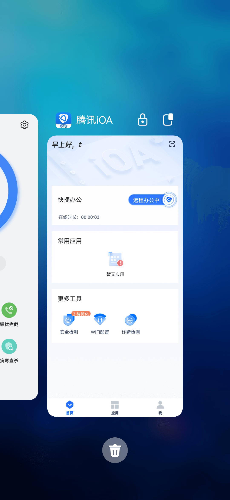
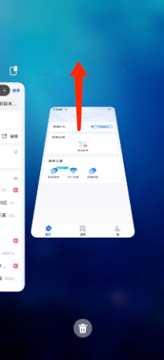
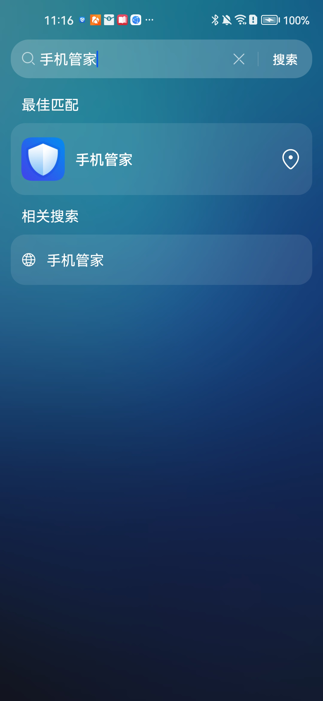
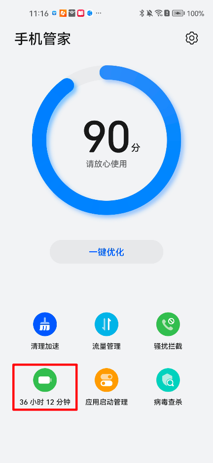
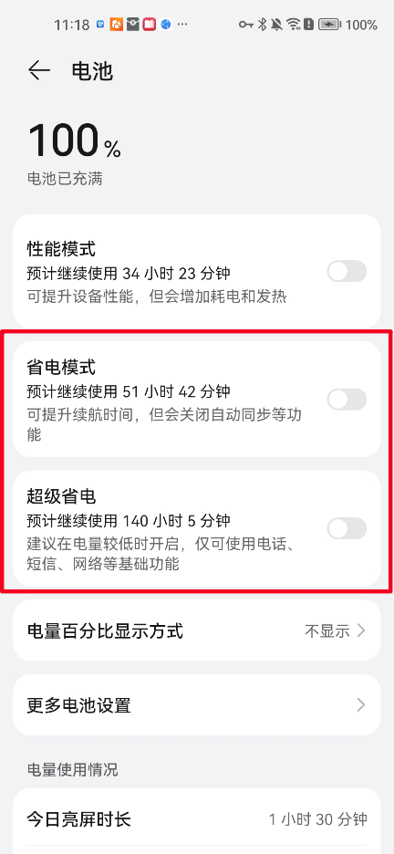
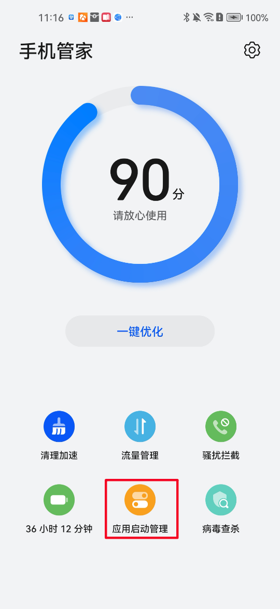
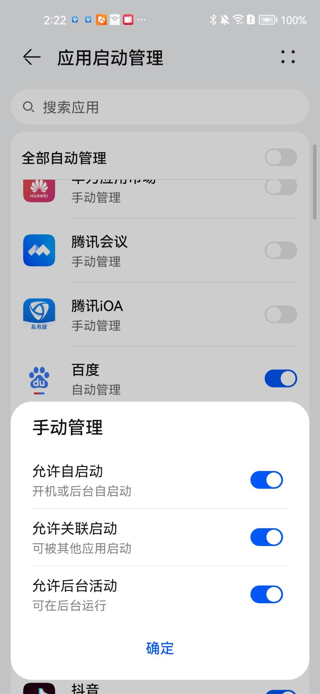

* 华为手机（鸿蒙3.0/4.0系统）如何设置应用后台运行
1、【锁定后台任务】（防杀）
打开iOA界面后——返回桌面——从屏幕底部上滑从屏幕底部向上滑动（有导航栏的点击多任务按钮）——进入多任务页面 ——找到iOA轻轻下滑停顿——右上角出现锁定标志表示锁定成功。

锁定后，可避免点击  时清理iOA。
时清理iOA。
但需注意的是，如果单独拖动多任务页面中的iOA窗口并上滑，仍会清理掉iOA。

2、关闭【省电模式】并运行应用【后台运行】
（2.1）打开华为手机管家——电池——关闭【省电模式】/关闭【超级省电】（如有打开）。



（2.2）华为手机管家——应用启动管理——找到iOA并点击——【自动管理】开关设置为关，【允许后台活动】设置为开，【允许自启动】/【允许关联启动】亦建议设置为开。

